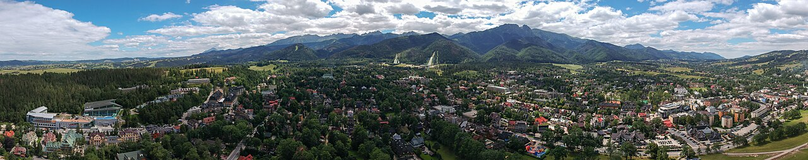
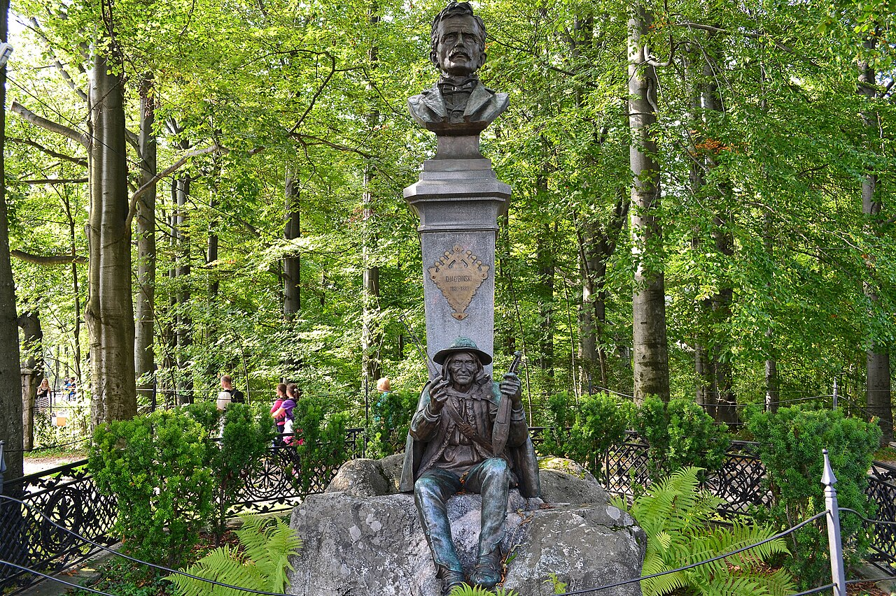
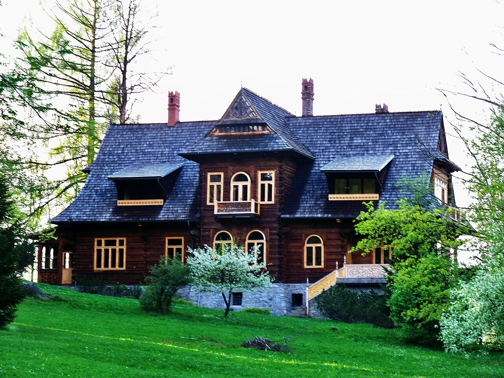
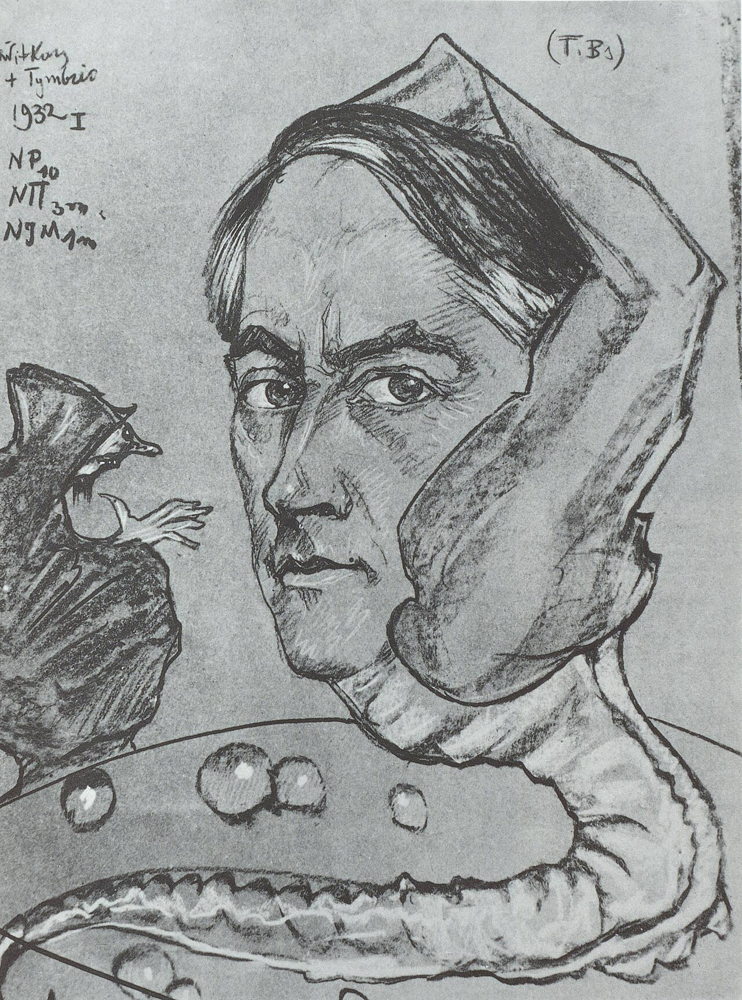
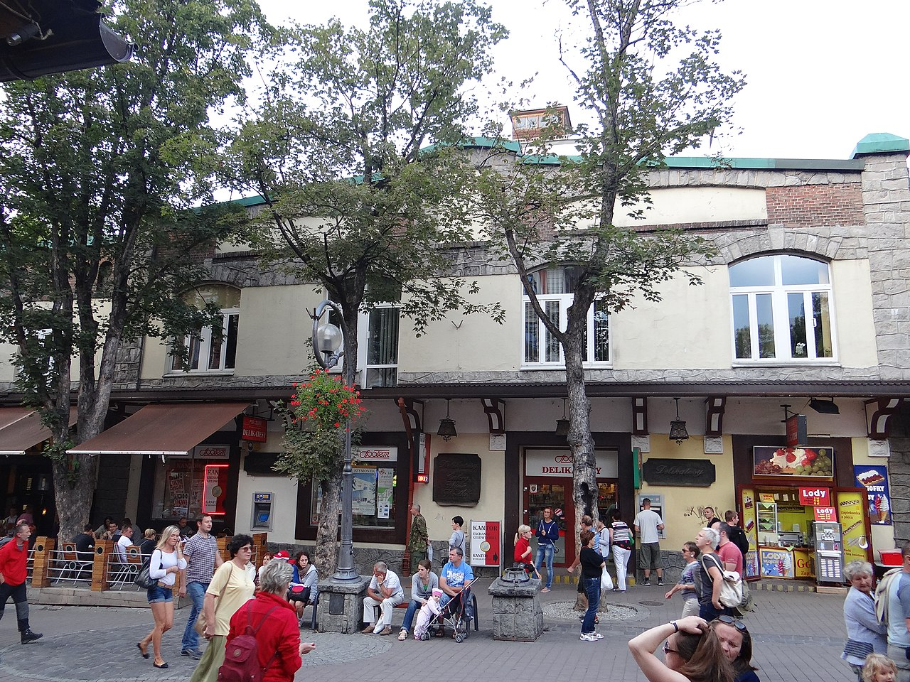
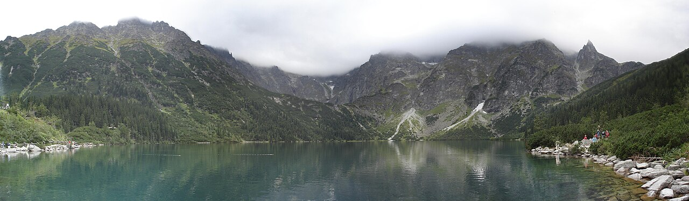

오늘 자코파네 크루포브키 거리의 한 모퉁이에 하우비인스키 기념물이 서 있다. 그가 죽은 지 14년 후(1903년) 자코파네 사람들이 세운 것이다. "자코파네의 발견자"라는 비공식 칭호.
한 가지 비교가 이해를 돕는다 — 한국에서 1920년대 일제강점기 정선·평창의 한 산자락이 갑자기 조선 지식인들의 여름 별장지가 되었다고 상상해 보자. 그 자리에서 문학과 미술과 음악이 자라난다. 그 비슷한 일이 1880년대 자코파네에서 일어났다.
바르샤바가 "사라졌다 다시 쌓아 올린 도시"이고 크라쿠프가 "살아남은 도시"라면, 자코파네는 도시가 아닌 마을이다. 인구 약 27,000. 그러나 1880년대 분할기 폴란드 지식인들이 이 산자락에 모이면서 — 한 마을이 폴란드 문화의 한 둥지가 되었다.
지금까지 8회를 거쳐 우리는 폴란드의 두 대도시를 봤다 — 바르샤바와 크라쿠프. 9회는 그 둘 어느 쪽에도 닿지 않은 한 자리로 간다. 자코파네(Zakopane). 폴란드 남쪽 끝, 슬로바키아 국경 바로 앞, 타트라 산자락의 한 마을이다.
인구는 약 27,000. 크라쿠프(80만)의 1/30, 바르샤바(180만)의 1/65다. 면적도 작고, 도시 격자도 없고, 왕궁도 광장도 없다. 폴란드를 "처음 만나는 첫 여행자"의 일정에 굳이 들어갈 이유가 없어 보이는 자리다.
그런데도 자코파네는 폴란드 일정에 자주 들어간다. 크라쿠프 다음으로 한국인이 가장 많이 가는 폴란드 자리 중 하나다. 왜인가?
한국인의 직관으로 답하면 쉽다 — "서울·부산 다음의 강원도." 일상에서 떠나 산으로 가는 자리. 그러나 그 비교는 절반만 맞다. 폴란드인에게 자코파네는 강원도 산자락 그 이상이다 — 한 시기에 "폴란드의 정신적 수도"로 불렸던 자리다.

한 마을이 어떻게 한 나라의 문화를 30년 동안 떠받쳤는가 —
그 30년이 자코파네의 무게다. — 9회차의 큰 그림
19세기 중반까지 자코파네는 폴란드 누구도 모르는 외진 산마을이었다. 그 마을이 어떻게 30년 안에 폴란드 문화의 한 자리가 되었는가.
자코파네라는 이름이 기록에 처음 나타나는 것은 17세기. 그러나 19세기 중반까지 이 마을은 인구 수백 명의 양치기 마을이었다. 슬로바키아·헝가리 쪽 산자락 사람들(이후 폴란드 산악인 고랄이라 불릴 사람들)이 양과 함께 살던 자리. 외부 사람이 굳이 찾아올 이유가 없었다.
그런데 — 19세기 전반부터 — 마을에서 작은 산업이 시작된다. 자코파네 옆 쿠즈니체(Kuźnice)에 작은 제철소가 본격 가동되기 시작한 것이다(1817년부터 호몰락스 집안 운영). 이때부터 외부 사람이 자코파네라는 이름을 듣기 시작한다. 그래도 폴란드 지도의 한 변두리 점이었다.
2회차에서 본 분할기 폴란드를 다시 떠올리자. 1795년부터 폴란드는 세 제국에 의해 분할되어 있었다. 자코파네는 오스트리아령 갈리시아(Galicja)에 속해 있었다. 같은 시기 러시아령(바르샤바)과 프로이센령(포즈난)에서는 폴란드어 교육·출판·집회가 강하게 통제되었으나, 오스트리아령 갈리시아는 비교적 자유로웠다. 크라쿠프가 폴란드어 대학을 유지할 수 있던 것도 이 자유 덕이다.
1873년, 바르샤바의 한 의사 티투스 하우비인스키(Tytus Chałubiński, 1820–1889)가 자코파네를 처음 방문한다. 그는 의학과 자연사를 함께 공부한 사람이었고, 결핵 환자들을 위한 "공기 치료(klimatoterapia)" 적지를 찾고 있었다. 자코파네의 고지 공기, 침엽수림, 그리고 산이 그를 사로잡았다.
하우비인스키는 자코파네를 — 의사와 환자와 친구들에게 — 끊임없이 추천했다. 그가 자코파네에서 매년 여름을 보내기 시작했고, 그를 따라온 친구들이 — 폴란드 지식인의 한 무리가 — 그를 따라왔다. 1880년대가 되면 자코파네는 폴란드 문학·예술·과학계 사람들의 여름 별장지가 되어 있었다.

오늘 자코파네 크루포브키 거리의 한 모퉁이에 하우비인스키 기념물이 서 있다. 그가 죽은 지 14년 후(1903년) 자코파네 사람들이 세운 것이다. "자코파네의 발견자"라는 비공식 칭호.
한 가지 비교가 이해를 돕는다 — 한국에서 1920년대 일제강점기 정선·평창의 한 산자락이 갑자기 조선 지식인들의 여름 별장지가 되었다고 상상해 보자. 그 자리에서 문학과 미술과 음악이 자라난다. 그 비슷한 일이 1880년대 자코파네에서 일어났다.
1880년대 자코파네는 여름마다 폴란드 지식인 수백 명이 모이는 자리였으나, 가는 길은 여전히 멀었다. 크라쿠프에서 마차로 이틀이 걸렸다.
1899년, 크라쿠프–자코파네 철도가 완공된다. 갑자기 자코파네까지의 거리가 마차 이틀에서 기차 한나절(약 6시간)로 줄었다. 폴란드 분할 3국 중 가장 자유로운 갈리시아의 — 가장 깊은 — 자리로 폴란드인이 쉽게 갈 수 있게 된 것이다.
이때부터 자코파네는 단순한 여름 별장지가 아니라 "분할기 폴란드의 정신적 영토"가 된다. 러시아령·프로이센령에서는 폴란드어로 자유롭게 말할 수 없는 시기에, 자코파네에서는 폴란드어로 시를 쓰고 강연하고 토론할 수 있었다. 폴란드인 작가·화가·음악가·과학자가 — 약 30년 동안 한 마을에 모이는 — 폴란드 역사상 드문 밀집이 일어났다.
자코파네가 폴란드인에게 특별해진 두 번째 이유 — 한 화가가 이 산자락에서 "폴란드 건축의 한 국적"을 발명한 것이다.

스타니스와프 비트키에비치(Stanisław Witkiewicz, 1851–1915)는 폴란드 동부(리투아니아 쪽) 출신의 화가·평론가다. 1863년 1월 봉기에 가담한 아버지가 시베리아로 유형된 집안에서 자랐다. 그의 화가 인생의 첫 절반은 — 바르샤바와 뮌헨에서 — 폴란드 사실주의 회화의 한 자리에 있었다.
1886년 그는 결핵 치료차 자코파네에 왔다. 그리고 — 그가 본 풍경에 — 결정적으로 사로잡혔다. 비트키에비치가 본 것은 단순한 풍경이 아니었다. 그는 고랄(Górale, 폴란드 산악인)들의 목조 건축에서 — 폴란드가 잃었던 한 자기 정체성의 흔적을 — 보았다.
비트키에비치의 주장은 이랬다. 분할기 폴란드 도시들의 건축은 — 빈·베를린·페테르부르크의 — 외래 양식이다. 그러나 산자락 깊숙이 외부의 영향이 닿지 않은 자리에는, 폴란드 고유의 한 양식이 — 양치기들의 손에서 살아남아 — 그대로 보존되어 있다. 가파른 박공지붕, 통나무 벽, 처마의 장식 조각, 태양·꽃·심장 모티프 ··· 비트키에비치는 이것을 "폴란드 국민 양식"의 후보로 제시했다.
이 주장은 — 단순히 학문적이지 않았다. 분할기 폴란드인이 — 자기 나라 없이 — 자기 정체성을 어디에 둘 것인가에 대한 한 답이었다. 한 나라가 사라졌을 때, 자기 양식을 찾을 자리가 있다는 것. 그 자리가 산자락이라는 것. 비트키에비치의 주장은 건축의 문제가 아니라 정체성의 문제였다.
비트키에비치는 — 화가였지 건축가가 아니었음에도 — 직접 자코파네 양식의 첫 건물을 설계했다. 빌라 코리바(Willa Koliba), 1893년 완공. 폴란드 부유한 후원자 즈이그문트 군바인의 별장으로 지어졌다. 가파른 지붕, 통나무 벽, 처마 끝마다 새겨진 태양 문양. 폴란드 부르주아의 별장에 양치기 오두막의 형식이 적용된 — 의도적인 — 한 충돌이었다.
이어서 그는 빌라 파드 예드람리(Willa Pod Jedlami, 1897)를 설계한다. 코리바보다 더 크고 더 화려하다. 자코파네 양식의 정점으로 평가받는다.
이후 약 20년 동안 자코파네에 — 그리고 폴란드 다른 도시들에도 — 자코파네 양식 빌라들이 100채 이상 지어진다. 비트키에비치는 1915년 사망 전까지 약 20채를 직접 설계했다.

1918년 폴란드가 부활한 직후, 자코파네 양식은 새 폴란드의 "국민 양식" 후보로 진지하게 논의되었다. 한 시기 정부 청사·학교·역사(驛舍)가 자코파네 양식으로 지어졌다. 그러나 — 산자락 목조 양식을 도시의 큰 건물에 그대로 적용하는 것은 비용도 컸고 기술적 문제도 많았다. 1930년대가 되면 자코파네 양식은 — 자코파네에서만 — 사용되는 한 지역 양식으로 자리잡는다.
그래도 비트키에비치의 시도가 남긴 것은 작지 않다. 분할기 폴란드인이 자기 양식을 발견하려 한 한 가장 진지한 시도가 자코파네에 있었다는 것. 그리고 오늘 자코파네 거리를 걷는 사람이 — 100년 전의 시도의 흔적을 — 그대로 만질 수 있다는 것.
자코파네가 폴란드 문화의 한 자리가 된 진짜 이유 — 한 마을에 모인 사람들의 명단 때문이다.
1900년 전후 자코파네의 여름 손님 명단에 들어 있던 폴란드인의 일부:
이 명단의 무게는 — 같은 시기 폴란드 어느 도시의 여름 손님 명단과 비교해도 — 압도적이다. 자코파네는 "한 시기 폴란드 문화 인명사전의 여름 주소"였다.

3회차에서 우리는 폴란드 음악사의 두 정점을 봤다 — 19세기의 쇼팽과 20세기의 시마노프스키. 카롤 시마노프스키(Karol Szymanowski, 1882–1937)는 1930–35년 자코파네의 한 빌라에서 거주하며 작업했다. 그 빌라가 아트마(Atma).
그가 자코파네에서 작곡한 가장 유명한 작품이 발레 〈하르나시에(Harnasie)〉(1923–31). 타트라 산자락의 한 도적단(harnasie) 이야기를 다룬 작품으로, 고랄 민요를 작품 전체에 녹였다. 비트키에비치가 자코파네 양식 건축을 발명했듯이, 시마노프스키는 자코파네 음악을 — 폴란드 20세기 음악의 한 정체성으로 — 만들었다.
오늘 Villa Atma는 시마노프스키 박물관이다. 작은 박물관이지만 — 자코파네에서 가장 묵직한 한 자리.

비트키에비치의 아들 스타니스와프 이그나치 비트키에비치(Stanisław Ignacy Witkiewicz, 1885–1939)는 — 아버지와 구분하기 위해 — "비트카치(Witkacy)"라는 짧은 이름으로 불린다. 폴란드 20세기 전반의 가장 다능한 예술가 중 한 명.
화가, 극작가, 소설가, 철학자, 사진가. 그가 만든 한 가지 작은 사업이 흥미롭다 — "Firma Portretowa S. I. Witkiewicz", 즉 "비트키에비치 초상화 회사". 자코파네에 거주하며 의뢰자에게 — 의뢰자가 마신 술·약물의 양에 따라 — 네 가지 등급의 초상화를 그려준 사업. 진지한 농담이자 진지한 예술이었다.
1939년 9월 — 폴란드 동부에서 — 소련군이 폴란드를 침공한 다음 날 그는 자살했다. 그러나 그가 자코파네에서 남긴 작품은 폴란드 20세기 미술의 한 핵심으로 남았다.

자코파네 시내 한가운데 — 옛 목조 교회 옆에 — 작은 옛 묘지가 있다. Pęksów Brzyzek이라는 — 폴란드인도 발음을 어려워하는 — 이름의 자리다. 19세기 후반 이후 자코파네에 깊이 연결된 인물들이 — 자코파네 출신이 아닌 외부 인물도 — 여기에 묻히기 시작했다.
여기에 묻힌 사람들의 일부:
이 묘지가 — 폴란드 다른 어느 묘지와도 다른 — 자코파네만의 한 무게를 가진다. 한 마을의 옛 묘지에 그 마을을 빚어낸 사람들이 함께 누워 있다. 10회 가이드 투어의 한 정거장이다.
여기서 한 질문을 다시 던질 만하다 — 왜 이 사람들이 다 자코파네였는가? 폴란드의 다른 산자락이 없었던 것이 아니다. 카르파티아 산맥은 길고, 자코파네 옆에도 산악 마을이 여럿 있었다.
한 답은 — Beat 1에서 본 — 분할기 갈리시아의 자유였다. 또 한 답은 — Beat 2에서 본 — 비트키에비치의 자코파네 양식이라는 한 자기 정체성의 발명이었다. 그러나 더 깊은 답은 — 사람이 사람을 부른 한 단순한 동력이다. 한 명이 자코파네에 오면, 그가 다른 한 명을 부른다. 1880년대 하우비인스키가 친구들을 불렀고, 1890년대 비트키에비치 부자가 다른 예술가들을 불렀고, 1920년대 시마노프스키가 다른 음악가들을 불렀다. "한 자리에 한 명단이 모이는 임계점"이 자코파네였다.
100년 전의 정신적 자리가 오늘 어떻게 살아 있는지. 그리고 첫 여행자가 자코파네에 무엇을 보러 가는지.

자코파네 시내의 거의 모든 사람의 동선이 한 거리에 모인다 — 크루포브키(Krupówki). 약 1km 길이의 보행자 거리. 이 거리가 자코파네의 광장 역할을 한다.
거리 양옆은 식당·기념품·산악 의류·노점이 빼곡하다. 오스치펙(oscypek) — 양젖을 훈제한 자코파네 지역 치즈 — 을 길거리에서 굽는 노점이 가장 자코파네스러운 풍경 중 하나. 폴란드 다른 도시에서는 보기 힘들다.
거리 중간 한 자리에 — Beat 1의 — 하우비인스키 기념물. 거리 끝(남쪽)에 — Beat 3의 — 옛 목조 교회와 Pęksów Brzyzek 묘지. 10회 가이드 투어의 메인 축이다.
크루포브키 거리 북쪽 끝에서 도보 5분이면 굴루부프카(Gubałówka) 케이블카 하부 정거장이다. 1938년 개통, 폴란드 가장 오래된 케이블카 중 하나(kolej linowo-terenowa). 정상까지 약 1,100m 고도, 약 5분.
굴루부프카 정상(1,126m)은 — 타트라 본격 산이 아닌 — 그 앞의 작은 산이다. 그래서 정상에서 보는 풍경이 특별하다 — 건너편에 타트라 산맥 전체가 한 폭의 파노라마로 펼쳐진다. 자코파네 시내 그리고 그 너머 타트라가 한 화면에. 가족 단위, 첫 여행자에게 가장 권장되는 산악 풍경.
정상에는 식당과 기념품점. 산악 활동 없이도 한 시간이면 충분히 즐길 수 있다.
굴루부프카가 "가벼운 산"이라면, 카스프로비 비에르흐(Kasprowy Wierch, 1,987m)는 본격 타트라다. 자코파네 시내에서 버스로 약 20분 떨어진 쿠즈니체(Kuźnice)에서 케이블카를 타고 약 25분, 두 번 갈아탄다.
정상은 — 슬로바키아 국경 위에 — 그대로 걸쳐 있다. 한쪽 발은 폴란드, 한쪽 발은 슬로바키아. 정상 부근의 한 풍경은 — 동유럽에서 보기 드문 — 알프스에 가까운 고산 지대다.
주의 — 카스프로비 비에르흐 케이블카는 사전 예약 권장(특히 여름·겨울 성수기). 정상은 해발 2000m에 가까워 8월에도 영하로 떨어질 수 있다. 첫 여행자에게는 — 시간이 충분할 때만 — 권장.

4회차에서 한 번 본 그 호수. 자코파네에서 동남쪽으로 약 20km, 타트라 국립공원 안의 — 산 한가운데 — 푸른 호수. "바다의 눈(Morskie Oko)"이라는 이름은, 옛 전설에 따르면 이 호수가 지하 통로로 발트해와 연결되어 있다는 것에서 왔다.
접근은 — 버스 + 도보. 자코파네에서 버스로 약 30분, 그 뒤 호수까지 도보로 약 1시간 30분(왕복 약 18km). 또는 마차 이용 가능. 왕복 약 5–6시간의 일정.
폴란드에서 가장 사진이 많이 찍히는 자연 풍경 중 하나. 그러나 1박 일정의 자코파네 여행자에게는 — 시간이 빠듯하다. 자코파네에 2박 이상 머무는 여행자에게 권장.
10회 가이드 투어는 시내 도보 중심으로 작고 단단하게 구성된다. 모르스키에 오코는 — 별도 일정으로 — 권장.
4회차에서 본 폴란드 음식들과 별개로, 자코파네에는 산악 지역 고유의 음식이 있다.
특히 오스치펙 — 첫 여행자가 자코파네에서 반드시 한 번은 만져야 할 한 음식이다. 시내 어디서나 길거리 구이로 살 수 있다.
오프닝에서 본 비교 — "서울·부산 다음의 강원도" — 를 다시 본다. 절반은 맞다. 일상에서 떠나 산으로 가는 자리. 산악 음식, 산악 풍경, 산악 휴양. 한국인이 자코파네에서 가장 쉽게 친숙해하는 점이다.
그러나 절반은 다르다. 한국의 강원도가 — 산이 좋아서 사람들이 가는 자리 — 라면, 자코파네는 "한 시기 한 나라가 자기 정체성을 발견한 자리"다. 그 무게가 산 풍경 옆에 한 켜로 깔려 있다. Pęksów Brzyzek 묘지, Villa Atma, 빌라 코리바 — 이 세 자리를 본 사람과 보지 않은 사람의 자코파네는 — 다른 자코파네다.
10회 가이드 투어의 한 시간은 "강원도 자코파네"가 아니라 "1900년의 자코파네"를 한 번 만져보는 시간이다.
크루포브키 거리만 걸으면 자코파네는 — 폴란드의 한 명동 — 정도로만 보인다. 그러나 거리에서 한 블록 옆으로 비켜 Pęksów Brzyzek 옛 묘지와 옛 목조 교회를 들르고, 빌라 코리바 또는 Villa Atma 중 하나라도 들어가 보면, 자코파네의 다른 한 켜가 — 갑자기 — 보인다. 1900년의 한 명단이 이 자리에 한 번 모였었다는 사실이.
그리고 — 시간이 허락한다면 — 굴루부프카 케이블카로 한 번 올라가 타트라 전체를 한 폭에 본다. 그 풍경이 1873년 하우비인스키가 본 풍경, 1886년 비트키에비치가 사로잡힌 풍경이다.
자코파네는 — 5회차의 바르샤바, 7회차의 크라쿠프와 달리 — 도시가 아닌 자리다. 폴란드 국가의 수도가 된 적도, 천 년 왕조의 무덤이 된 적도 없다. 그러나 한 나라가 가장 약했을 때 — 분할기의 갈리시아 산자락에서 — 폴란드는 자기 자신을 다시 발명했다. 자코파네 양식이라는 한 건축, 〈하르나시에〉라는 한 음악, 그리고 한 명단의 시인·화가·작곡가가 한 자리에 모인 30년.
1918년 폴란드가 부활했을 때, 새 나라가 — 한순간이나마 — 자코파네 양식을 "국민 양식"으로 진지하게 검토한 데에는 이유가 있었다. 그 마을이 한 나라의 한 부재 시기를 견뎌내는 한 정신이었기 때문이다. 그 정신의 흔적이 — 오늘도 — 크루포브키 거리 한 블록 옆에, Pęksów Brzyzek 묘지의 비석에, Villa Atma의 한 응접실에 — 그대로 만져진다.
10회의 가이드 투어가 그 만짐의 한 시간을 한 루트로 묶는다.
한 나라가 사라졌을 때, 자기 양식을 찾을 자리가 있다.
그 자리가 산자락이라는 것 — 그것이 자코파네의 한 발견이었다. — 9회차의 결론